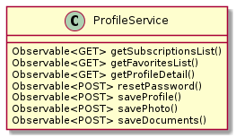
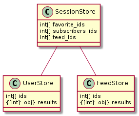

![@startsalt
{
{T
+profile.component.html
+profile.service.ts
+profile.component.ts
+profile.component.spec.ts
+profile.module.ts
+profile.component.scss
+favorites/
++favorites.component.scss
++favorites.component.html
++favorites.component.ts
+forgot-password/
++forgot-password.component.scss
++forgot-password.component.spec.ts
++forgot-password.component.ts
++forgot-password.component.html
++password-validation.ts
+edit-profile/
++edit-profile.component.html
++edit-profile.component.scss
++edit-profile.component.ts
++edit-profile.component.spec.ts
++woman-form/
+++woman-form.component.scss
+++woman-form.component.ts
+++woman-form.component.html
+++woman-form.component.spec.ts
++man-form/
+++man-form.component.scss
+++man-form.component.ts
+++man-form.component.html
+++man-form.component.spec.ts
++agency-form/
+++agency-form.component.html
+++agency-form.component.spec.ts
+++agency-form.component.ts
+++agency-form.component.scss
+upload-photo-dialog/
++upload-photo-dialog.component.ts
++upload-photo-dialog.component.html
++upload-photo-dialog.component.spec.ts
++upload-photo-dialog.component.scss
+add-photo-dialog/
++add-photo-dialog.component.ts
++add-photo-dialog.component.scss
++add-photo-dialog.component.spec.ts
++add-photo-dialog.component.html
+subscriptions/
++subscriptions.component.scss
++subscriptions.component.ts
++subscriptions.component.html
}
}
@endsalt](../../_images/plantuml-ce6ea2ee369a1e71ca91674b35776fd2b1ba1b9b.png)
Component diagramm.¶
Detail page.
![@startuml
[Base Component]
[My photo Component]
[Favorites Component]
[Subscribers Component]
[Info Component]
[Gallery Component]
[Feed Component] --> [Feed Item]
database "NGRX store" {
[Session]
}
[Base Component]-->HTTP1
HTTP1-->[My photo Component]
[Base Component]-->STORE
STORE-->[Session]
note left of HTTP1 : GET: account/myphoto
[Base Component]-->HTTP2
HTTP2-->[Favorites Component]
note top of HTTP2 : GET: account/favorites
[Base Component]-->HTTP3
HTTP3-->[Subscribers Component]
note top of HTTP3 : GET: account/subscribers
[Base Component]-->HTTP4
HTTP4-->[Info Component]
note top of HTTP4 : GET: account/info
[Base Component]-->HTTP5
HTTP5-->[Feed Component]
note top of HTTP5 : GET: account/feed
[Base Component]-->HTTP6
HTTP6-->[Gallery Component]
note top of HTTP6 : GET: account/gallery
@enduml](../../_images/plantuml-235ec2e88d84efb6c1c57226b6ad7e3186d51220.png)
Profile service.

Store structire.
export interface SessionState {
sid: string;
token: string;
is_auth: boolean;
online: number;
user: User;
feed_ids: {[id: number]: Feed};
photos: {[id: number]: Photo};
favorite_ids: [id: number];
subscribers_ids: [id: number]
}
Store relations.
